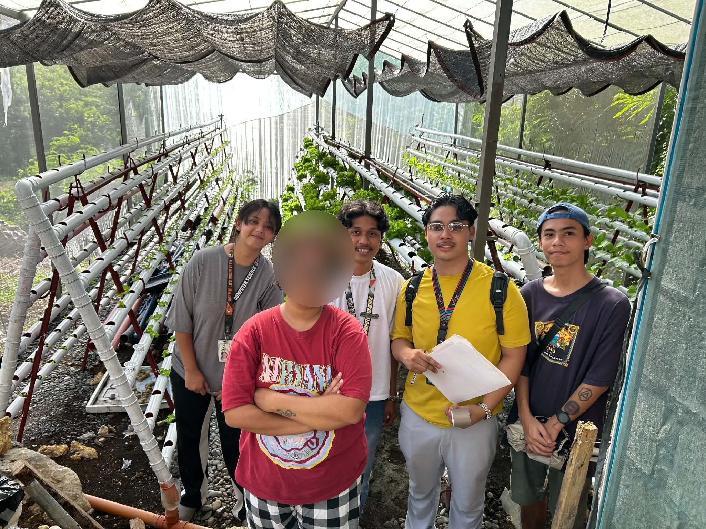

Farm owner, 3 years in hydroponics
Horizontal pipes in a net house
Lettuce, petchay, mustasa, spinach
What the farm owner told us
- Checks her plants herself, daily, by visual estimate only, with no recordsVisual only
- The upper levels are hard to see or reach5 · Strongly agree
- Not enough workers to check as often as she wants4 · Agree
- Uses pH/EC, temperature and humidity sensors and a pump timer, but none counts potsSensors only
- Grows in horizontal pipes now, and is willing to add vertical towers alongside themOpen to towers
- Interested in the system; would use a smartphone and asked for"Website for real-time monitoring"
- Concerns: cost, the drone hitting plants, and propeller windCost · Safety
How it shaped
our design
our design
Low-cost parts and a printed sign
Markers keep a safe, steady distance
Phone-ready dashboard with scan history
Saved images for later health checks